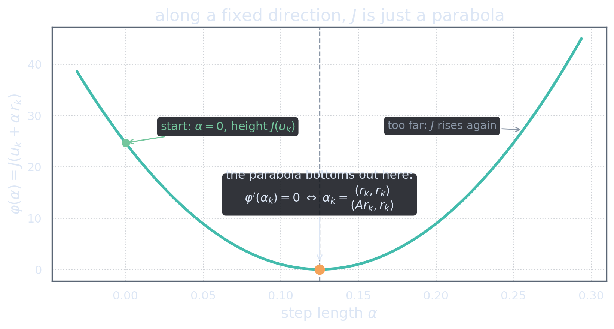
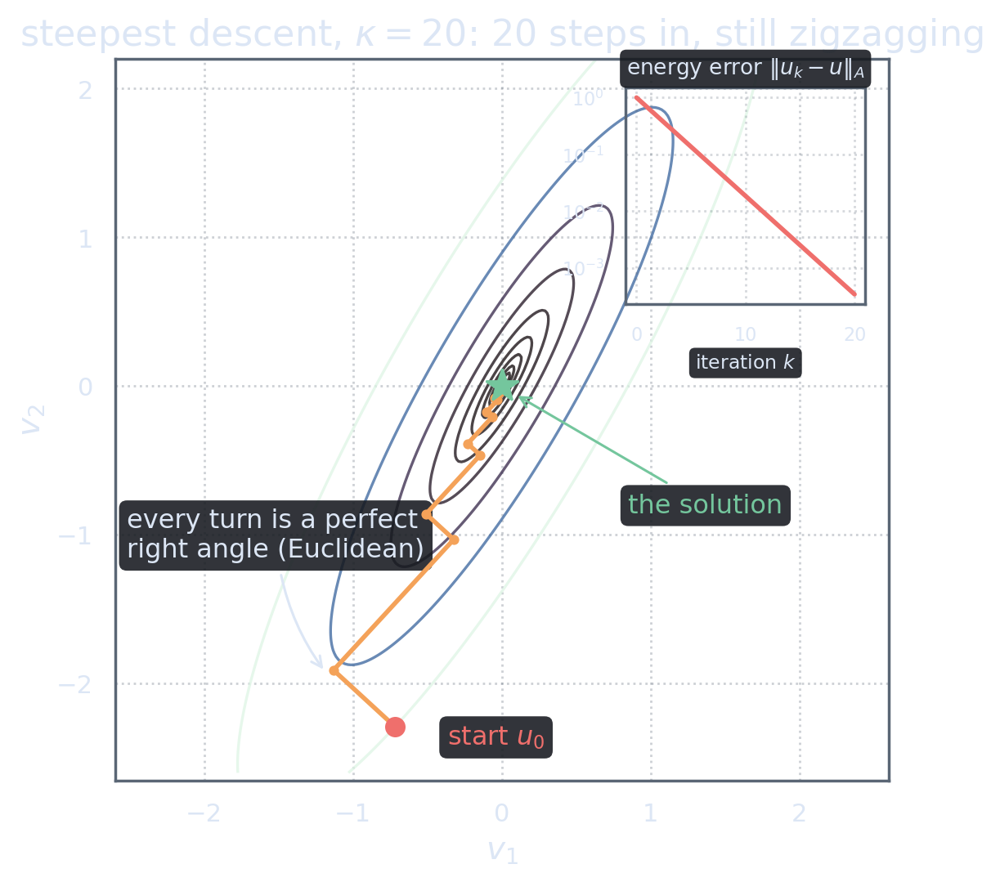

The Most Obvious Algorithm in the World
Act 1 left us standing on a hillside with a compass. The landscape is \(J(v)=\tfrac12\ip{Av}{v}-\ip{f}{v}\); its unique bottom is the solution of \(Au=f\); and at our current position \(u_k\) the residual \(r_k = f - Au_k\) points downhill. The plan requires no imagination whatsoever:
step in the direction \(r_k\), stop at the lowest point along that line, repeat.
The only quantity to determine is how far to step. Write the step as \(u_{k+1} = u_k + \alpha\, r_k\) and ask which \(\alpha\in\mathbb R\) is best. “Best” has an unambiguous meaning here: the \(\alpha\) that makes \(J\) smallest along the ray. This is called an exact line search, and for our quadratic landscape it is not an aspiration but a formula — the master identity of Act 1, with \(v = u_k\) and \(w = \alpha r_k\), gives \[\varphi(\alpha) := J(u_k + \alpha r_k) = J(u_k) \;-\; \alpha\,\ip{r_k}{r_k} \;+\; \tfrac{\alpha^2}{2}\ip{Ar_k}{r_k},\] where we used \(\ip{Au_k - f}{r_k} = -\ip{r_k}{r_k}\).
Look at what this says: restricted to any line, the infinite-dimensional landscape \(J\) is an ordinary upward-opening parabola in the single real variable \(\alpha\) (upward-opening because \(\ip{Ar_k}{r_k}>0\) — positive definiteness again). Minimizing a parabola is calculus at its most gentle: \[\varphi'(\alpha) = -\ip{r_k}{r_k} + \alpha\,\ip{Ar_k}{r_k} = 0 \qquad\Longrightarrow\qquad \alpha_k = \frac{\ip{r_k}{r_k}}{\ip{Ar_k}{r_k}}.\]

Choose \(u_0\in\H\) and compute \(r_0 = f - Au_0\). Then for \(k=0,1,2,\dots\): \begin{align*} q_k &= A r_k && \text{(the one application of } A\text{)}\\ \alpha_k &= \frac{\ip{r_k}{r_k}}{\ip{q_k}{r_k}} && \text{(step length)}\\ u_{k+1} &= u_k + \alpha_k r_k && \text{(step)}\\ r_{k+1} &= r_k - \alpha_k q_k && \text{(new residual, for free)} \end{align*} Stop when \(\norm{r_k}\) is small enough.
“Walk downhill” is so natural that it has a precise birthday: Augustin-Louis Cauchy proposed exactly this method in a four-page note to the French Academy on October 18, 1847 [Cau47] — motivated, pleasingly for this site, by the least-squares orbit computations of astronomy. Lemaréchal’s short commentary [Lem12] tells the story and reprints the argument in modern notation. What Cauchy could not know is how badly his method ages as the landscape stiffens — which is this act’s main event.
The residual update in the last line deserves its one-line justification, because it is exact, not approximate: \[r_{k+1} = f - Au_{k+1} = f - A(u_k + \alpha_k r_k) = r_k - \alpha_k A r_k = r_k - \alpha_k q_k.\] So each iteration costs one black-box application of \(A\), two inner products, and two vector updates. Given our toolkit from Act 1, it is hard to imagine spending less.
Everything about this method is greedy and local: look down, take the best possible step along the steepest line, look down again. Greedy and local is exactly what you would do lost in fog on a mountainside — and, as every hiker knows, it is not how you descend a long narrow valley.
Feel It Fail
Before any more theory, drive the method yourself. The panel below shows the contour map of a two-dimensional slice of the landscape. The slider controls the stiffness \(\kappa\) of the valley — how elongated the contours are; its formal definition comes in a moment. Click anywhere to drop a starting point, then step.
Two experiments to make sure you see it:
- Set \(\kappa = 1\) (a perfectly round bowl). One step lands exactly on the solution, from anywhere. Hold that memory; it becomes important in Act 3.
- Set \(\kappa = 40\) and start near a “corner” of the valley. The method crosses the valley floor over and over, descending a little each time, converging with excruciating politeness.
The Staircase, Autopsied

The staircase pattern in the figure is not an accident of this example — it is a theorem, and its proof is one line. The line search chose \(\alpha_k\) by setting \(\varphi'(\alpha_k)=0\). But differentiate \(\varphi\) directly: \[\varphi'(\alpha) = -\ip{f - A(u_k+\alpha r_k)}{r_k},\] which at \(\alpha=\alpha_k\) is \(-\ip{r_{k+1}}{r_k}\). So the stopping condition of each line search says precisely: \[\ip{r_{k+1}}{r_k} = 0.\]
Exact line search doesn’t merely permit the right-angled turns — it mandates them. Stopping at the bottom of the parabola means the new downhill direction has no component along the old one. Each direction is used, exhausted, abandoned… and then, two steps later, needed again.
Quantifying the pain
How slow is slow? The classical answer (we state it now and earn a sharper view of it in Act 6) is governed by the condition number. Let \(\gamma\) and \(\Gamma\) be the best constants with \[\gamma\,\norm{v}^2 \;\le\; \ip{Av}{v} \;\le\; \Gamma\,\norm{v}^2 \qquad\text{for all } v\in\H,\] and set \(\kappa = \Gamma/\gamma \ge 1\). Geometrically, \(\kappa\) is the squared aspect ratio of the contour ellipses — exactly the stiffness slider of the panel above. Steepest descent then satisfies \[\normA{u_{k+1}-u} \;\le\; \frac{\kappa-1}{\kappa+1}\;\normA{u_k-u},\] where \(\normA{\cdot}\) is the energy norm that Act 3 will formally introduce (for now: a norm in which descent of \(J\) is exactly shrinkage of the error). The bound is sharp — the figure above was started at a point that achieves it. For the worst-case analysis behind this bound see Shewchuk [She94], §6.2, or Nocedal & Wright [NW06], Ch. 3.
Numbers make the formula honest. Per step, the error keeps a factor \((\kappa-1)/(\kappa+1)\):
- \(\kappa=10\): factor \(0.818\) — about 11 steps per decimal digit. Tolerable.
- \(\kappa=100\): factor \(0.980\) — about 114 steps per digit. Painful.
- \(\kappa=10^4\): factor \(0.9998\) — about 11,500 steps per digit. Unusable.
Large \(\kappa\) is not a rare disease; it is the default state of the problems we care about. Discretized diffusion operators have \(\kappa\) growing like \(h^{-2}\) under mesh refinement (the classical stiffness-matrix estimates; see Brenner & Scott [BS08]); and the condition number of the normal equations \(G^*G\) is exactly the square of that of \(G\) (Saad [Saa03], §8.1). The regime where steepest descent dies is exactly the regime where we live.
Naming the crime
Here is the observation that unlocks everything, so let us state it carefully. Look at the staircase again. The method minimizes along a direction — call it \(p\) — and, at that moment, is genuinely at the lowest point of the landscape along \(p\). Two steps later it is walking along \(p\) again. Why? Because the intervening step, taken along a different direction, ruined the first minimization: after moving, the point is no longer optimal with respect to \(p\), and the work must be redone. And then redone again. The staircase is the picture of a method perpetually repairing damage it inflicts on itself.
Once said out loud, the demand practically states itself:
Steepest descent is optimal for one step and disastrous over many, because each new step un-does previous minimizations. What we should ask of a method: once a direction has been dealt with, no later step may spoil it.
Is that demand even satisfiable? Surprisingly, it translates into a clean, checkable condition on pairs of directions — but seeing that requires understanding first why the right angles of the staircase were the wrong right angles. That is the business of Act 3, and it is where the true geometry of the problem finally shows itself.
References
- Augustin-Louis Cauchy (1847). “Méthode générale pour la résolution des systèmes d’équations simultanées.” Comptes Rendus de l’Académie des Sciences de Paris 25, 536–538. full text (Œuvres complètes I.10, 399–402, Mathdoc)
- Claude Lemaréchal (2012). “Cauchy and the Gradient Method.” Documenta Mathematica, Extra Volume ISMP, 251–254. free PDF (EMS Press)
- Jonathan R. Shewchuk (1994). “An Introduction to the Conjugate Gradient Method Without the Agonizing Pain.” Carnegie Mellon University. Steepest-descent convergence analysis: §6. free PDF (CMU)
- Jorge Nocedal and Stephen J. Wright (2006). Numerical Optimization, 2nd edition. Springer. Line searches and steepest descent: Ch. 3. doi:10.1007/978-0-387-40065-5
- Yousef Saad (2003). Iterative Methods for Sparse Linear Systems, 2nd edition. SIAM. Conditioning of the normal equations: §8.1. doi:10.1137/1.9780898718003 · free PDF (author’s edition)
- Susanne C. Brenner and L. Ridgway Scott (2008). The Mathematical Theory of Finite Element Methods, 3rd edition. Springer. Conditioning of stiffness matrices under mesh refinement. doi:10.1007/978-0-387-75934-0